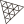

Вершина
VertexТочка с координатами X, Y, Z. Вершины задают углы поверхности и служат каркасом для всей модели.
Мультимедийные технологии · проект
3D-графика — это способ описать пространство математикой, а затем заставить свет вести себя как в реальности. Разбираем путь от первой вершины до кадра, которому веришь.
Уже 0 посетителей
01Основа
Каждый 3D-объект — это набор вершин в пространстве и правила, по которым они соединяются. Полигоны создают форму, материалы — поверхность, свет — объём. Вместе получается иллюзия, которую мозг принимает за реальность.
Столько времени есть у GPU, чтобы удержать 60 кадров в секунду. Внутри — миллионы полигонов, текстур и лучей.
Точка с координатами X, Y, Z. Вершины задают углы поверхности и служат каркасом для всей модели.
Треугольник из трёх вершин. Тысячи таких треугольников складываются в силуэт — от простого куба до персонажа.
Программа для GPU. Она вычисляет, как материал отражает свет: блеск металла, шероховатость дерева, прозрачность стекла.
02Пайплайн
Производство 3D — это конвейер. Каждый этап опирается на предыдущий, а финальный кадр собирает всё вместе.
Скетчи, референсы и серая болванка сцены: композиция, масштаб, ритм.
Pre-productionИз примитивов рождается геометрия: персонажи, предметы и окружение.
ModelingPBR-материалы задают цвет, шероховатость, металл и микрорельеф.
TexturingСкелет, веса и ключевые кадры превращают статичную модель в движение.
AnimationСвет ставит акценты, камера выбирает ракурс — сцена обретает настроение.
LightingGPU просчитывает тени, отражения и материалы. Получается финальное изображение.
Rendering03Интерактив
Чем выше детализация, тем плавнее форма — и тем дороже кадр. Переключай режимы и смотри на разницу.
Одна сфера — три уровня детализации. Сравни силуэт, количество треугольников и стоимость рендера.
Потяни модель, чтобы повернуть
04Свет
Изображение можно собрать быстро и приблизительно или медленно и физически точно. В играх и кино эти подходы часто работают вместе.
Треугольники проецируются на экран и закрашиваются пикселями. Предсказуемо, быстро и идеально для интерактивных сцен.
Лучи выходят из камеры, отражаются и преломляются, находя источник света. Отражения и тени получаются физически честными.
Physically Based Rendering описывает поверхность набором параметров: цвет, металличность, шероховатость, нормали. Один и тот же материал корректно выглядит при любом освещении.
05Инструменты
От open-source-редакторов до игровых движков и браузерных библиотек. У каждого инструмента своя зона силы.
Open-source-стандарт: моделирование, анимация, симуляции и рендер Cycles.
Real-time графика уровня AAA: Nanite для геометрии, Lumen для света.
Кроссплатформенные игры, интерактивные приложения и XR-проекты.
Быстрый моушн-дизайн, реклама и продуктовые визуализации.
Процедурная геометрия, разрушения и VFX для большого кино.

3D прямо в браузере: WebGL и WebGPU без плагинов. На нём собран этот сайт.
06Дальше
Графика становится быстрее, честнее и всё чаще рождается не из полигонов, а из нейросетей.
Новый графический API браузеров: меньше накладных расходов и больше контроля над GPU.
NeRF и Gaussian Splatting собирают объёмную сцену из фотографий с помощью нейросетей.
Честные отражения и глобальное освещение становятся интерактивными — киношный свет в реальном времени.
07Обучение
Практика без воды: каждый урок заканчивается готовой сценой, которую можно показать.
Для новичков
Интерфейс, моделирование, свет, материалы и первый финальный рендер.
Средний уровень
От блокаута и скульптинга до риггинга, позы и готовой сцены с освещением.
Продвинутый уровень
Lumen, Nanite и кинематографичная камера: как получить картинку уровня трейлера.
Оплата проходит на внешней странице Boosty. Вопросы по курсам — в Telegram.
07Мини-игра
Почувствуй себя постановщиком света. Настрой источник так, чтобы живая сцена совпала с эталонным кадром, — и сними свой дубль.
Сравнивай блики и тени. Двигай источник по сцене и настраивай его характер.
Тяни сцену, чтобы двигать свет · стрелки тоже работают